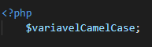

Variável é um espaço na memória do computador reservado para guardar um ou mais valores enquanto nosso código é executado. Ao declarar uma variável, atribuímos a ela nome e valor.
No PHP, uma variável é representada por cifrão ($), seguido do nome. A seguir, veremos algumas convenções de como devemos ou não fazer essa representação para melhorar a legibilidade do código e evitar erros.
Nota: Dependendo do seu editor de texto, erros de sintaxe serão avisados.
PHP utiliza como convenção o padrão de escrita camelCase, na qual uma ou mais palavras são unidas, sem espaços e com suas iniciais maiúsculas (exceto a primeira).
Vejamos um exemplo:
Por ser uma linguagem case-sensitive, sensível a letras maiúsculas e minúsculas, as variáveis a seguir são todas diferentes, apesar do conjunto de palavras iguais: